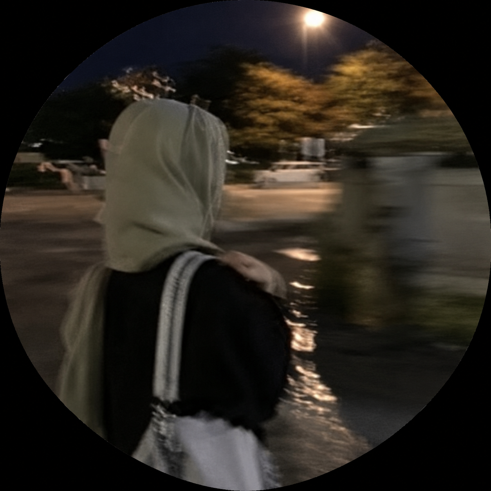

</>
HTML
Building the structure and content of web pages.
LearningSTUDENT · CURIOUS BY NATURE
A Grade 11 student exploring the world of Computer Science and Information Technology, one idea at a time.

01 / GET TO KNOW ME
I'm a student with a growing interest in how technology works — and how I can use it to create things that are useful, thoughtful, and beautiful.
I'm currently in Grade 11 at Kings Academy, where I'm building my foundation in Computer Science and Information Technology. I enjoy learning new skills, experimenting with code, and turning ideas into small projects.
This website is my first portfolio project and a starting point for documenting what I learn along the way.
02 / WHAT I'M LEARNING
A few of the tools and skills I'm developing as I explore technology.
Building the structure and content of web pages.
LearningStyling websites and exploring layouts, color, and design.
LearningExploring programming fundamentals and problem-solving.
Learning✦ These are skills in progress — there's always more to discover.
03 / A FIRST STEP
Every project starts with a first line of code. This is mine.
A responsive personal website introducing who I am, what I'm learning, and my journey into technology. Built as a first step toward sharing future projects.
Ask me about this project ↗04 / SAY HELLO
I'm at the beginning of my tech journey and always happy to connect, learn, and share ideas.
Email Yasmin ↗jazmineali2010@gmail.com